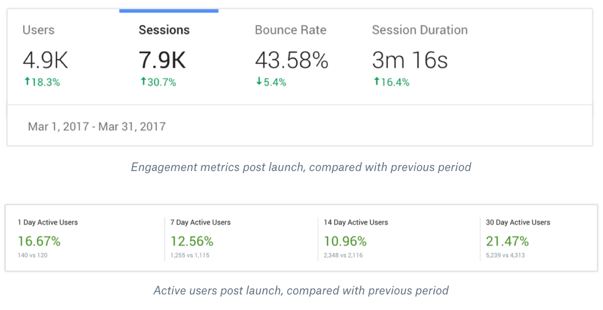
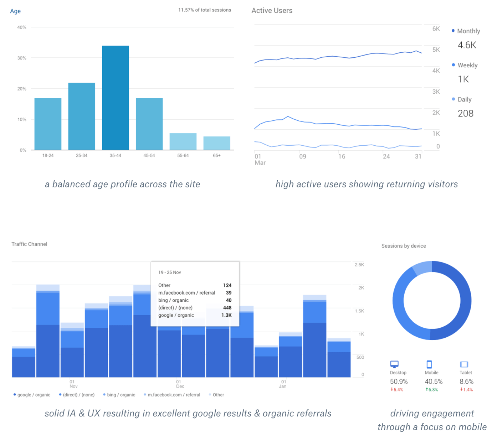

St. Kilian’s is unique on the Irish educational landscape, a German/Irish school with a strong European focus. St. Kilian’s is co-educational, inter-denominational and spans the full educational cycle from Kindergarten to Leaving Certificate. The school offers a diverse, inclusive yet challenging environment, enriched with a strong sense of Irish, German and European culture.
St. Kilian’s website had become visually outdated, difficult to navigate and they had difficulty scaling the site with their increasing catalog of internal and public facing content. I was selected to design a new site which would better represent the school visually, and one which would act as a hub of activity for parents, teachers and students throughout the school year.
I setup stakeholder interviews with all of those who were central to the project. This included the school principals, members of the parents association, the school secretary, the head of marketing and the head of the IT department.
These interviews allowed me to gain a full spectrum of the challenges that each individual had faced with the previous website and also to obtain a list of the goals for the new site from a user facing point of view and also from an administrative point of view.
I then outlined the constraints for the project and the goals that I would set to ensure I could deliver success for the project that was measurable.
Problems & Constraints:
Goals & Objectives
I was also responsible for hiring and managing a developer for the project, providing direction for a photographer and creating a project roadmap that would ensure the project was delivered on time and on budget.
To gain a better understanding of the users for the site, I carried out interviews with some of the teachers who would be creating content and updates for their content sections and tried to get a better understanding of their specific needs and also for the audience they were creating for. One area where this became crucial was in creating a Sport Schedule section that would be regularly updated and become central to all sports events organising within the school. These interviews also helped inform the overall design for the site and helped define the IA for the site.
From carrying out a design review of other educational institution sites, I was able to identify many areas where they often fell short. They catered too often for prospective students and failed to offer real value for the current students, parents, teachers & staff of the school.
One of the main challenges for the project was to organise all of the existing content for the site. The old site had over 250 pages and posts and everything needed to be re-evaluated and re-organised to make both the managing of content and the overall user experience more coherent and simplified. Once I had gone through the content and created a simple information architecture for the site I set a content timeline and worked closely with a copywriter to restructure much of the content to a simpler more readable format.
From my earlier analysis’ and interviews, I started to create user flows and stories to brainstorm ways to engage parents, teachers and students alike. These sections could be updated by staff, students and teachers and would feature prominently on the site offering a window into the lifeblood of the school through the engagement of everyone involved at the school. Ultimately, this would then drive prospective parents and students to the other aspects of the site having gained an initial positive impression of a vibrant and active life at the school.
Throughout the whole design & discovery process, I worked closely with the stakeholders at Kilian’s and included them at every stage of the process. This included involving them in the early stages of design through clickable interactive prototypes. I then continued to iterate on designs and worked towards delivering a beautiful experience that satisfied all stakeholders of the school.
I worked closely with the developer in an agile workflow to iterate on certain aspects of the site while gaining feedback from the stakeholders to ensure that everything functioned well from both the back end and administrative aspects to the front end delivery of the site.
Some of the highlights of the redesign focussed on delivering:
As well as delivering a website which visually, was received extremely positively and went beyond their expectations, the launch of the new site also saw a huge jump in engagement stats ensuring the KPIs I’d originally set for the project were all well met.
All engagement metrics are up very strongly from the same period on the previous year since launching the site.
 I continued to work with the team at St. Kilian’s for a period after launch to improve and monitor results on their site and to ensure it continued to drive engagement and enrolment at the school as they’d hoped. As well as continuing to take feedback from students and staff, I setup a search log analysis on the site to ensure that there was no pattern which suggested visitors to the site are unable to find the content they came to the site in search of. Through our initial work together and close collaboration, I was able to deliver a site that, both the client and I, are confident will continue to deliver success and results for them long into the future.
It was of great importance to us that our designer really understood the history and ethos of St. Kilian’s Deutsche Schule. Emma’s approach was considered and thorough with a really strong attention to detail. Emma worked hard to ensure all stakeholders were on board throughout the process and made the process very enjoyable. Feedback on the new site has been really positive across the board and the students in particular are delighted with it.
- Tanja Girdham, Communications & Marketing Coordinator at St. Kilian's
Thanks for taking the time to read through my case study! If you’d like to discuss any aspect of this project, or any other project for that matter, please don’t hesitate to contact me.